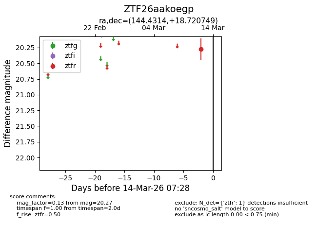
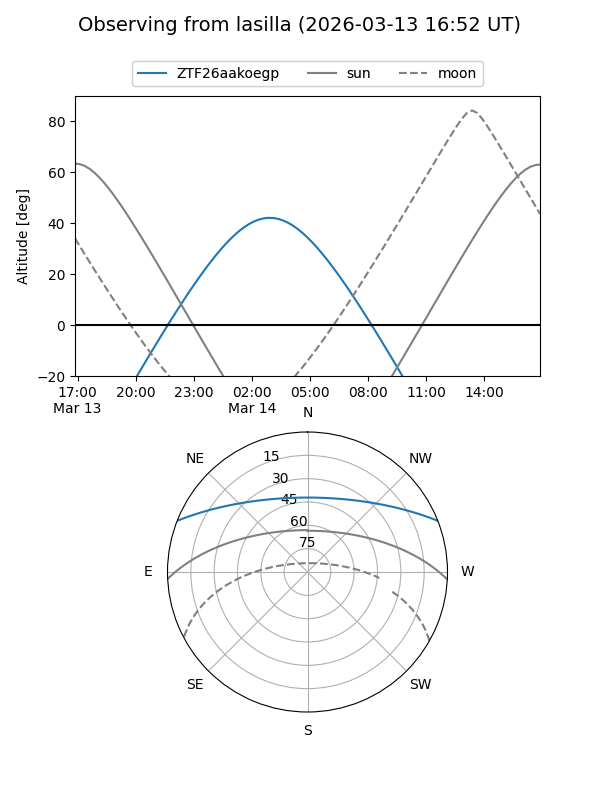
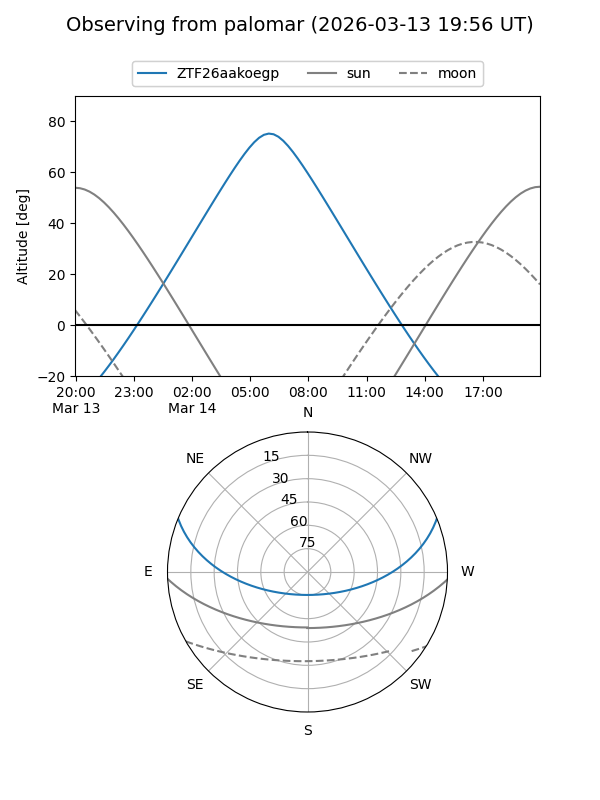
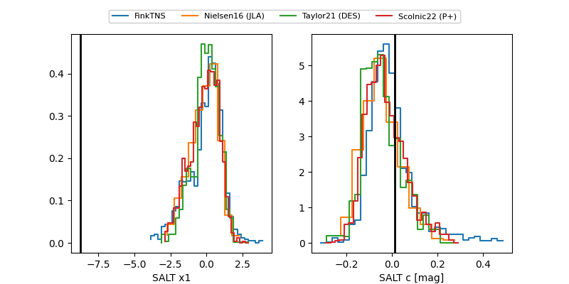

ZTF26aakoegp
Target ZTF26aakoegp at 2026-03-14 07:30
Aliases and brokers:
FINK: link
Lasair: link
ALeRCE: link
alt names
ZTF26aakoegp (ztf,fink_ztf)
Coordinates:
equatorial (ra, dec) = 144.4314,+18.72075
equatorial (HMS+DMS) = 09:37:43.53,+18:43:14.70
galactic (l, b) = (213.0061,+44.88343)
Flags:
Photometry:
last ztfr=20.27
1 ztfr detections
Lightcurve

Visibility


Additional plots
